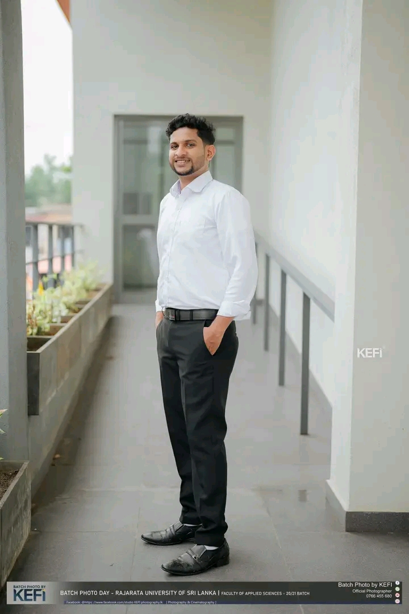

BSc (Applied Sciences) Undergraduate | Rajarata University of Sri Lanka
Analytical and highly motivated final-year BSc Applied Sciences undergraduate specializing in Mathematics, Statistics, and Chemistry. Possesses a strong quantitative foundation with hands-on research experience in time series forecasting, network analysis, and machine learning. A dedicated educator and researcher with a proven track record of community leadership, eager to contribute to impactful academic research and advanced statistical studies.
Rajarata University of Sri Lanka | Faculty of Applied Sciences
Specializing in Mathematics, Statistics, and Chemistry.
G.C.E. Advanced Level (2020) - Pannipitiya Dharmapala Vidyalaya (Physical Sciences Stream)
View CertificateG.C.E. Ordinary Level (2017) - Homagama Central College
View CertificateG.C.E. Grade 5 Scholarship Examination (2011) - Matara Janadhipathi Vidyalaya
View CertificateModeling and Forecasting Rainfall Patterns using Nonlinear Autoregressive (NAR), Nonlinear Autoregressive Exogenous (NARX), and Autoregressive Integrated Moving Average (ARIMA) Models with Logarithmic Transformation, Handling Non-linear Data, and Hydrological Forecasting with Climate Data Analysis.
View CertificateEvaluating the Impact of Synthetic Bridge Nodes on the Structural Recovery of Social Networks using Graph Theory, Network Resilience Simulation, and Social Media Analytics.
View CertificateAutomated Disease Detection System for Common Sri Lankan Crops Using Deep Learning and Convolutional Neural Networks (CNN) with Image Classification and Pattern Recognition.
View CertificateCodveda Technologies | Apr 2026 - May 2026
Engaged in professional data analysis tasks and projects, expanding practical skills in statistical computing and data manipulation.
Sasnaka Sansada (Ganitha Saviya Program) | Sep 2022 - Present
Mentored over 1,000 G.C.E. (O/L) students across 35+ government schools through targeted problem-solving sessions, contributing to a 10% average increase in school-wide mathematics pass rates.
Sasnaka Sansada & USAID | 2022
Provided strategic career and academic guidance to over 1,000 students, assisting them in identifying and planning appropriate future career pathways.
Postdoctoral Research Fellow,
UNSW, Australia.
+61 416351458
himashaharshani635@gmail.com
Medical Officer
No 6/2, Jayamawatha, Dangollawaththa, Nittabuwa.
+94 0718619717
nayanidhanushka088@gmail.com